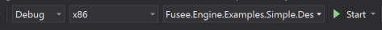

This Page describes how to get the FUSEE sources and how to prepare your local machine to run and build FUSEE as well as your own projects or tutorials built on top of FUSEE.
On this page
Prerequisites
- Pick a recent version of Visual Studio (Version 2017 - 15.3.x.x or higher). If you are a student you may
be eligible for a free educational version of Visual Studio Enterprise on
your School's Microsoft Imagine Webstore.
During installation, make sure the following
Workloads are checked (if not set by default):
- REQUIRED .NET Desktop Development
- OPTIONAL Mobile Development with .NET, if you're planning to run your FUSEE applications on Android.
- OPTIONAL Python Development, if you're planning to work on FUSEE's Export-Addon for Blender.
- Register with GitHub.
- Download and install Github Desktop.
- For advanced in-editor error checking and IntelliSense support, install JetBrain's ReSharper. Resharper is commercial software. If you are a student you may be eligible for a free educational version.
Get FUSEE
There are three different ways to akquire the FUSEE sources: Download, Clone or Fork FUSEE.
Download FUSEE
The easiest way to take a short look at FUSEE. You will not be notified about changes in the FUSEE sources, nor will you be able to receive incremental changes. If a new version of FUSEE turns up, you will need to download, unzip and build the entire FUSEE library from scratch.
- Browse https://github.com/FUSEEProjectTeam/Fusee
- Hit the
Donload ZIPbutton - Uncompress the downloaded ZIP file with some decent unzipper (e.g. 7zip). The built-in Windows decompressor will not work as it marks the deflated dll files contained within the ZIP file as unsafe. As a result the Web build will not work.
Clone FUSEE
The recommended way if you want to create your own projects on top of FUSEE. This way you will be able to synchronize your local copy to the latest changes on GitHub. Changes will be delivered incrementally to your local machine by using the Sync button in GitHub Desktop.
- Open Chrome or Firefox (Edge will not work). Login with your GitHub account and browse to https://github.com/FUSEEProjectTeam/Fusee.
- Open the GitHub Desktop application.
- From your browser's URL-Address line, drag the small greenish icon with the lock symbol next to the URL to the empty GitHub Desktop Window.
- The GitHub Desktop window will show a message like "Drop to clone FUSEE". Drop it!
- Specify a local directory on your hard disk where FUSEE will be installed.
Fork FUSEE
Alternative for ADVANCED Users: If you are planning to edit the FUSEE source code or contribute to the FUSEE engine (and not only try using it) consider to [fork] (https://help.github.com/articles/fork-a-repo/) the repository.
Whichever way you chose to get the FUSEE sources, after getting them you must create a system variable named FuseeRoot and set it to the directory chosen above with a trailing Backslash.
Build FUSEE
Identify your local FUSEE installation directory. Will be called [FuseeRoot] from now on.
Open [FuseeRoot]\src\Fusee.Engine.sln in Visual Studio (e.g. by double-clicking it).
Set the following Configuration to be "Active":
- Active Solution Configuration: "Debug"
- Active Solution Platform: "x86"
- Startup Project: "Fusee.Engine.Examples.Simple.Desktop" 
Build the solution (Menu: Build -> Build Solution) or directly start the Example (Start button). FUSEE and the Simple Desktop application will build and run.

You may also want to try building the Simple Example for Web and for Android
Web
- Select the Startup Project to be "Fusee.Engine.Examples.Simple.Web"
- Build the solution (Menu: Build -> Build Solution) or directly start the Example (Start button). FUSEE and the simple example will be built as a web application and started in your default browser (Chrome works best).

Android
- Connect an appropriate Android Device (Android 4.4 or higher, OpenGL ES 2.0 or higher) or configure a local Android emulator with the appropriate capabilities.
- Select the Startup Project to be "Fusee.Engine.Examples.Simple.Android"
- Build the solution (Menu: Build -> Build Solution) or directly start the Example
- Select the Android device (or emulator) to start using the options given under the Start button. FUSEE and the simple example will be built for Android and started on the specified device.